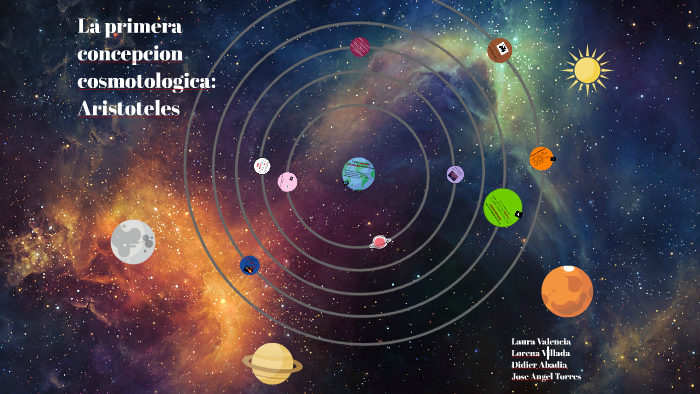

Aristóteles destacó el significado de arché como aquello que no necesitaba de ninguna otra cosa para existir, solo de sí mismo, es decir, como el elemento o principio de una cosa que, a pesar de ser indemostrable e intangible en sí misma, ofrecía las condiciones de posibilidad de esa cosa.
Aristóteles fundó la escuela peripatética en 335 a. C. cuando abrió su primera escuela filosófica en el Liceo, también fundado por él en Atenas. El nombre de la escuela procede de la palabra griega "ambulante" o "itinerante". La función de la educación era la formación del hombre virtuoso, que encontrara el equilibrio entre el exceso y la precariedad. En el Liceo por la mañana se dedicaban las clases a la Filosofía, exclusivas para los discípulos. Por las tardes se permitía un público mayor, impartiendo Retórica y Dialéctica.
Aristóteles desarrolló el sistema de Eudoxo. En el sistema aristotélico, la Tierra esférica estaba en el centro del universo, y todos los cuerpos celestes estaban unidos a 47-55 esferas transparentes y giratorias que rodeaban a la Tierra, todas ellas concéntricas con ella (el número es tan alto porque son necesarias varias esferas para cada planeta). Estas esferas, conocidas como esferas cristalinas, se movían a diferentes velocidades uniformes para crear la revolución de los cuerpos alrededor de la Tierra. Estos estaban compuestos de una sustancia incorruptible llamada éter. La Luna estaba en la esfera más cercana a la Tierra, entrando en contacto con el área de Tierra, causando manchas oscuras (máculas) y la capacidad de pasar a través de fases lunares.
